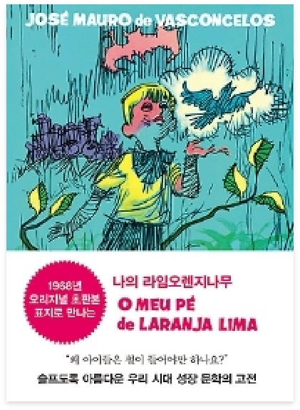

♥
나의 라임오렌지 나무
-
저자 | J.M.데 바스콘셀로스
출판사 | 동녁
출판년도 | 2020.02.25
1968년 브라질 첫 출간
34개 나라 20여 개 언어로 번역
전 세계적으로 수천만 부 이상 판매된 모던클래식
1978년 국내 첫 출간 후 40년 넘게 사랑받아온 스테디셀러
사랑스런 꼬마 악동 제제의 슬프고도 아름다운 이야기 『나의 라임오렌지나무』는 동녘출판사의 전신인 -
저자소개
조제 마우로 데 바스콘셀로스는 1920년 리오데자네이로의 방구시에서 포르투갈계 아버지와 인디언계의 어머니 사이에서 태어났다. 가난으로 인해 불우한 어린 시절을 보냈고, 의대에 진학했지만 학업을 중단하고 권투선수, 바나나 농장 인부, 그림 모델, 어부, 초등학교 교사 등 다양한 직업을 전전했다. 이러한 경험이 문학적 밑바탕이 되어 1942년 『성난 바나나(Banana Brava)』로 작품 활동을 시작했고, 1962년에 발표한 『호징냐, 나의 쪽배(Rosinha, Minha Canoa)』로 평단의 찬사를 받으며 작가로서 입지를 -
출판사 서평
고(故) 기형도 시인은 『중앙일보』문화부 기자 시절, 1987년 3월에 쓴 이 책의 서평에서 10년 가까이 베스트셀러 자리를 지키는 이 책의 마력을 "설명하기가 쉽지 않다"라고 했다. 그래서 "이상한 책"이라고 부르며 "이 책의 감동은 '철듦'에 있지 않다. 반대로 '철들기 전의 세계'에 대한 미칠 듯한 그리움에 있다"고 극찬했다. 소설가 김인숙은 "이 책을 읽을 때마다 눈물이 난다"라고 하며 이 책에 대한 애정을 드러냈고, 영화배우 유지태는 "혼자 책 읽는 시간이 많았던 어린 시절, 읽으며 일곱 번 울었을 정도로 감동
 자세히
자세히
해당 도서는 독서퀴즈 서비스가
제공되지 않습니다.
-
피치못할피치:D2020.09.06.부자가 되기 위해 사소한 습관부터 하나씩 고쳐봐야겠다는 생각이 들었고, 저를 한 번 되돌아볼 수 있는 시간이 되어 좋았습니다^^#존리 #존리의부자되는습관 #부자를꿈꾼다 #부자되기_도전! #로또당첨
-
자두자두졸령2020.09.04.부자되고싶다아아아아아 요즘 티비에 자주 보이시는 존리님! 궁금해서 읽어봤는데, 너무 재밌었어요~#존리 #부자 #독서 #책읽기습관 #저축
-
아네모네세모네2020.09.01.괜히 베스트셀러가 아니네요! 재밌는데 제가 과연 지킬 수 있을지 ㅠ_ㅠ#부자되는법 #부자되는습관 #존리 #책추천